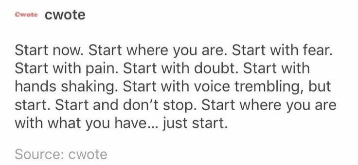

It’s already May, if you can believe it. A third of the year is already over and it’s hard to say how I feel about it. Thinking back it seems like the year just started but also like it's been a very long time. It's wild how quickly time can pass while also feeling like ages have gone by, isn't it? I feel like I'm always saying this when I'm reflecting on time passing but it’s just a universal experience I feel like.
Reflecting on the first part of 2024 can be a great way to gain some perspective and set intentions for what's to come. So I’d like to delve into what I’ve learned about myself, my goals and my priorities so far this year and also discuss some challenges and accomplishments I’ve experienced in the past few months.
One major lesson I’ve learned this year and that has really hit home for me this year is the importance of simply starting. There are so many things I want to do, as is the case for many people, but I often find myself stuck in a cycle of thinking it's either too late or too early to begin. I've caught myself saying, “I should've started this months ago,” only to realize that in a few months, I'll likely be saying the same thing about the present moment. The truth is, the best time to start is now. There’s no other option. Just start and see where it goes.
As a university student who rarely has the time to do things, this becomes harder and harder, but as a student who’s currently applying to jobs, I’m trying to develop skills and experience things that will help boost my resume, so this lesson has been a tough one when I know I could've and should've started things earlier so I’d be good to go now.
There have been moments when I wished I had started certain endeavors earlier, but upon reflection, I recognize that this tendency to procrastinate has been a recurring pattern in my life. So, my goal moving forward is to not just think about the things I want to do but to start doing them, no matter what happens.
There's a quote I saw recently that encompasses this sentiment well:
So, if you want to write a book, do it. If you want to learn to cook, do it. If you want to learn to code, do it. Do it now. Start now. Don’t let the fear of failure or the lack of presumed time get in your way.
There'll be endless tomorrows that you’ll never get to, so start today. Time is finicky like that. It’s fleeting but never relenting, it marches on, carrying us forward whether we're ready or not. It’s fleeting but never forgiving, it moves forward incessantly, indifferent to our desires to hold onto it. It’s fleeting but never certain, reminding us that every second is precious and irreplaceable. It’s fleeting but never stagnant. It flows ceaselessly, reminding us that opportunities, once gone, may never return. So, embrace the present, pursue your passions, and make today the starting point of your journey.
Another lesson I’ve learned is that I need to be okay with the anxiety I live with. It’s a part of me I need to accept and move forward from there. I get so stuck in self-deprecation and I need to move past it and work around my limits. Push myself to do the things I want to do, even if it makes me uncomfortable.
A major challenge I’ve faced this year is my sleep schedule. I’ve always had trouble with my sleep in many ways. I find myself so deep into anxious thoughts at night, that I can’t get my brain to shut off. Then when I finally, finally, do sleep, I have trouble staying asleep. So at this point, I stay up so late, to the point of exhaustion because I hate the process of sleep. I push it off as much as I can. My sleep schedule is so messed up, sometimes I don’t fall asleep till the sun comes out. Which ultimately means me waking up in the afternoon and wasting the day away. I’ve realized I like when I wake up earlier and get on with my day in the morning, giving myself the chance to be productive. With the way life is going right now and how exhausted I am all the time, it sucks because it gives me an excuse to push other things off. So, I hope that as the year goes on, I get better with my sleep and be the better, more energized version of myself.
An accomplishment so far this year is completing another semester. This may not be the biggest thing but it was a difficult semester that really pushed me to the limit and I’m happy to say I did it and I succeeded in doing so. I was happy with my grades and this is an accomplishment to celebrate.
Another thing that gave me joy this year was seeing my friends more and finally doing the things we had planned for so long. We had a picnic, we went to new places and ate new foods, we explored, we went on walks, we played games. We had a blast and I hope as life goes on and gets more and more hectic, we continue doing these things and making time for each other.
For the rest of the year, I hope to use the lessons I’ve learned and continue forth with them. This year I want my mission to be to not waste time. No matter what or where, to start the things I want to do without fear. To not let my anxieties get in the way of the life I want to live. To be better to myself and more forgiving in my own actions and failures so that ultimately I’m a better person who is able to sleep comfortably. Who is a good friend and who knows they made the most of their time and had fun while doing so.
I’ll leave this off by saying that I hope this reflection has inspired you to reflect on your own year and maybe you will also follow my steps and just start living.
Good luck on your journey. I hope for the best for you and your year.
“May your coming year be filled with magic and dreams and good madness. I hope you read some fine books and kiss someone who thinks you’re wonderful, and don't forget to make some art - write or draw or build or sing or live as only you can. And I hope, somewhere in the next year, you surprise yourself.” - Neil Gaiman
Warmly, Minahil